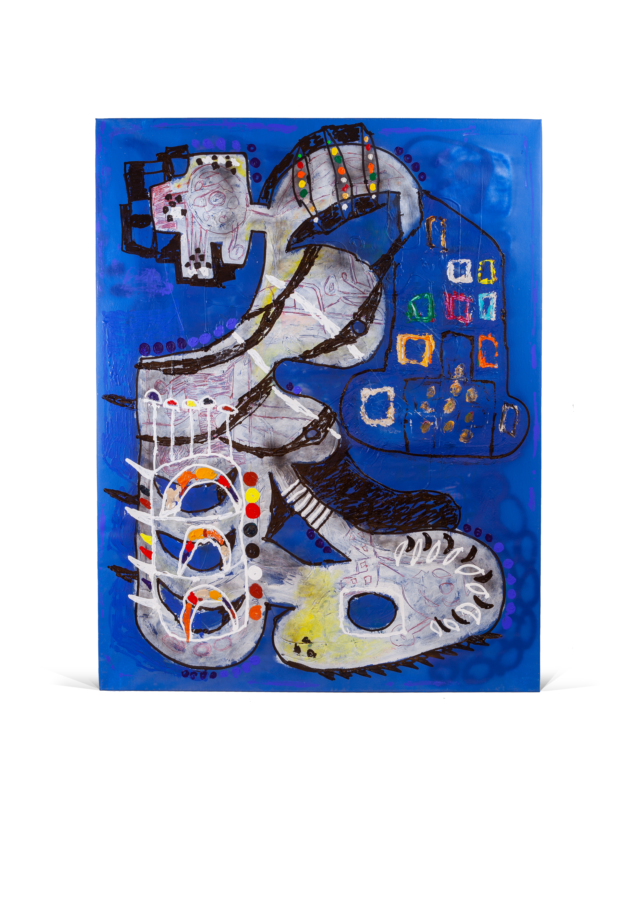

Awat Serdashti is an Oslo-based artist with a background in graffiti. Originally from Kurdistan and raised in Kongsberg, he has used the city as a sketchbook since the late 1990s, developing a raw, spontaneous and poetic visual language of his own.

Untitled
Acrylic and spray paint on canvas
195 × 150 cm